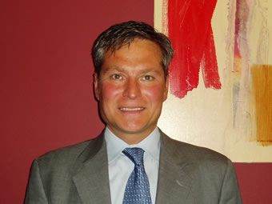
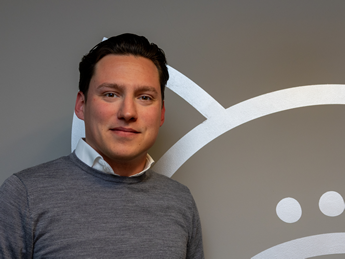
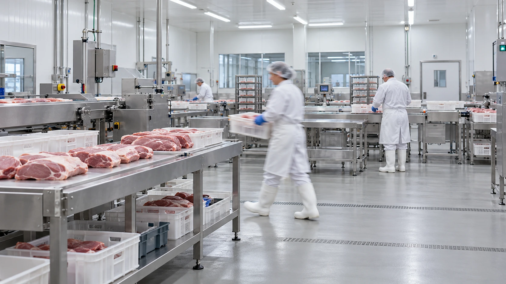

Directors and team
Vleesbedrijf P. Wils specialises in deboning pigs’ heads. Founded by Pierre Wils in 1957 and now based in Grobbendonk, our company grew from a local producer into a key partner for the meat processing industry.

Eric Wils
Managing Director

Luca Wils
Director
Our team
Our close-knit team works every day to maintain quality and respond to our customers’ needs. Every customer matters to us.
Careers at Wils
For questions about working at Wils, please contact HR or administration.
Contact HR / administrationProduction and site
Automation and in-line production help us supply quality products cost-effectively while meeting stringent hygiene standards.
We follow developments in the market and continually refine and modernise our products and production processes.
In 2025, we processed approximately 14.6 million kg of fresh pigs’ heads.

Grobbendonk
Since 1998, we have operated from our factory on the Klein Gent industrial estate in Grobbendonk.
Facilities
Our facilities include a freezer warehouse with mobile racking.
International supply
We supply the meat processing industry worldwide and focus on customer service.
Our history
From our beginnings in Antwerp to the family business in Grobbendonk today.
Our beginnings in Antwerp
Pierre Wils started his own business in livestock, meat and by-products in Antwerp. Its main activities were trading in slaughter by-products and deboning cattle heads.

Deboning pigs’ heads
Pierre Wils also began deboning pigs’ heads.
Partnership with Fernandez-Turnez
The company began working with Fernandez-Turnez. Weekly production capacity was approximately 80 tonnes of pigs’ heads and 1,000 cattle heads.
Acquisition and move to Deurne
The company acquired Fernandez-Turnez and moved to a new site in Deurne. Pierre Wils was joined by his sons, Eric and Marc.
The first deboning machine
The company purchased a semi-automatic machine for deboning pigs’ heads.
A new factory in Grobbendonk
The company moved to a new factory in Grobbendonk and bought a second semi-automatic machine for deboning pigs’ heads. Production capacity rose to approximately 450 tonnes of pigs’ heads per week.

Equipment for dried pet food
The company installed equipment for dried pet food.
Management handover
Eric and Marc Wils took over management of the company.
Validation of the self-checking system
The self-checking system (QA) was validated.
Food safety certification
The company was certified to the BRC Global Standard for Food Safety and received certification for its self-checking system (QA).
Remembering Pierre Wils
Pierre Wils died on 28 May 2011. He was born on 30 October 1935.
65 years of Vleesbedrijf P. Wils
Vleesbedrijf P. Wils marked its 65th anniversary.
Solar panels
On 1 February 2026, Wils announced the installation of 692 solar panels (449.80 kWp).
70 years in business
In 2027, Vleesbedrijf P. Wils celebrates its 70th anniversary.
News.
News about the people, investments and developments at Vleesbedrijf P. Wils. Each article reflects the situation on the date shown.
Peter De Bruycker retires
After 26 rewarding years at Vleesbedrijf Wils, I will be closing an important chapter in my professional life as I retire on May 1st 2026.
I would like to sincerely thank all colleagues, customers, and suppliers for the trust, the pleasant collaborations, and the many valuable moments we have shared over the years. It has been a true privilege to be part of this journey and to build so many lasting relationships along the way.
The experiences, memories, and friendships I gained during this time will stay with me and are something I deeply appreciate.
As I step into this new phase of life, I do so with gratitude and many great memories.
Thank you all once again - and who knows, our paths may cross again!
Warm regards,
Peter
IKB and Beter Leven certificates
Following its annual audit, Vleesbedrijf P. Wils obtained IKB and Beter Leven certification.
Current certificates692 solar panels installed
Installing 692 solar panels (449.80 kWp) is an important step towards a more sustainable, energy-efficient future.
See this milestone in our historyBRC AA+ and ACS after the annual audit
Following its annual audit, Vleesbedrijf P. Wils obtained certification to the BRC Global Standard for Food Safety at grade AA+ and ACS certification for its self-checking system.
Current certificates14.6 million kg processed in 2025
In 2025, Vleesbedrijf P. Wils processed approximately 14.6 million kg of fresh pigs’ heads.
Production and site65 years of Vleesbedrijf P. Wils
We are proud to mark the 65th anniversary of Vleesbedrijf P. Wils.
Our beginnings in 1957